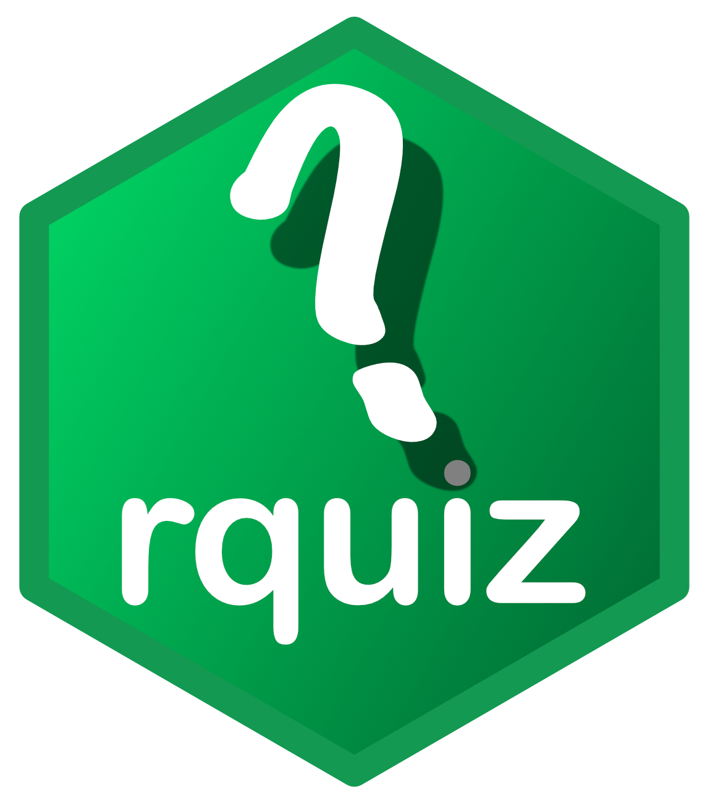

Create a multi-page quiz with navigation, timer, and results
Source:R/multiQuestions.R
multiQuestions.RdmultiQuestions creates an interactive quiz that presents multiple
questions one at a time with Previous/Next navigation. A timer tracks how
long the user takes (optional), and a results page shows the total score
with an optional 'Show solution' button to reveal correct answers. Supports
both single-choice and multiple-choice questions.
Usage
multiQuestions(
x,
title = "Quiz",
language = "en",
shuffle = FALSE,
showTipButton = FALSE,
showSolutionButton = TRUE,
inclTimer = TRUE,
width = "100%",
height = "500px",
center = TRUE,
scroll = FALSE,
fontFamily = "'Helvetica Neue', Helvetica, Arial, sans-serif",
fontSize = 16,
titleFontSize = 20,
questionFontSize = 16,
titleAlign = "left",
titleCol = "#FFFFFF",
titleBg = "#5F5F5F",
questionCol = "#1C1C1C",
questionBg = "#F7F7F7",
mainCol = "#1C1C1C",
mainBg = "#F7F7F7",
optionBg = "#ECECEC",
timerCol = "#1C1C1C",
navButtonCol = "#FFFFFF",
navButtonBg = "#28A745",
tipButtonCol = "#1C1C1C",
tipButtonBg = "#F1F1F1",
tipAreaCol = "#1C1C1C",
tipAreaBg = "#E7F9E7",
tipAreaBorder = "#28A745",
solutionButtonCol = "#1C1C1C",
solutionButtonBg = "#F1F1F1",
solutionAreaCol = "#1C1C1C",
solutionAreaBg = "#D6EAF8",
solutionAreaBorder = "#3498DB",
theme = NULL
)Arguments
- x
A list of question lists. Each sub-list should contain:
$questionA character string with the question text.$optionsA character vector of answer options (min. 2).$answerAn integer index (SC) or numeric vector of indices (MC) of the correct answer option(s).$tip(optional) A character string shown as a custom tip whenshowTipButton = TRUE.
Sub-lists can be named (e.g.
q1,q2) for readability, but this is not required. UsecheckMultiQuestionsto validate the input before passing it.- title
character; the title text. The default is
"Quiz".- language
character; the language of the quiz interface. Sets button labels, navigation text, result page text and other UI elements automatically. Currently supported:
"en"(English, default),"de"(German),"fr"(French), and"es"(Spanish). To request additional languages, please open an issue on GitHub.- shuffle
logical; if
TRUE, the order of questions is randomized each time the widget is rendered or the quiz is restarted with 'Try again'. The default isFALSE.logical; whether to show a tip button on each question page. If
TRUEand the question list contains a 4th element (tip text), the custom tip is displayed. In multiple-choice mode without a custom tip, the number of correct answers is shown. In single-choice mode, the button only appears for questions with a custom tip. The default isFALSE.logical; if
TRUE(default), a 'Show solution' button is displayed on the results page, allowing users to reveal the correct answers. IfFALSE, only the score (0 or 1) per question is shown.- inclTimer
logical; whether to include a timer (
TRUE, default) or not. The timer starts counting immediately after the page is loaded.- width
character; the width of the quiz frame area in pixels or percentage. The default is
"100%".- height
character; the height of the quiz frame area in pixels or percentage. The default is
"500px". Ifscroll = FALSE, the height is automatically determined based on content.- center
logical; if
TRUE(default), the quiz frame is centered when the width is less than"100%".- scroll
logical; if
TRUE, theheightargument sets a fixed frame height with a scroll bar for overflowing content. Useful for HTML presentations. IfFALSE(default), the height adjusts automatically.- fontFamily
character; the font family for all text elements in CSS style. The default is
"'Helvetica Neue', Helvetica, Arial, sans-serif".- fontSize
integer; the font size in pixels for the main text elements. All other properties are rescaled accordingly. The default is
16.- titleFontSize
integer; the font size in pixels for the title. The default is
20.- questionFontSize
integer; the font size in pixels for the question text. The default is
16.- titleAlign
character; the alignment of the title text. One of
"left"(default),"center", or"right".- titleCol
character; the title text color as hex color or R color name. The default is
"#FFFFFF".- titleBg
character; the title background color as hex color or R color name. The default is
"#5F5F5F".- questionCol
character; the question text color. The default is
"#1C1C1C". The question is displayed in its own container between the title and the answer options.- questionBg
character; the background color of the question container. The default is
"#F7F7F7".- mainCol
character; the text color of the answer options and main content area. The default is
"#1C1C1C".- mainBg
character; the background color of the main content area. The default is
"#F7F7F7".- optionBg
character; the background color of the answer option blocks. The hover color is automatically derived (30% darker). The default is
"#ECECEC".- timerCol
character; the timer text color as hex color or R color name. The default is
"#1C1C1C".character; the text color of the navigation buttons (Previous, Next, Try again). The default is
"#FFFFFF".character; the background color of the navigation buttons (Previous, Next, Try again). The default is
"#28A745".character; the tip button text color. The default is
"#1C1C1C".character; the tip button background color. The default is
"#F1F1F1".- tipAreaCol
character; the text color of the tip area. The default is
"#1C1C1C".- tipAreaBg
character; the background color of the tip area. The default is
"#E7F9E7".- tipAreaBorder
character; the border color of the tip area. The default is
"#28A745".character; the 'Show solution' button text color. The default is
"#1C1C1C".character; the 'Show solution' button background color. The default is
"#F1F1F1".- solutionAreaCol
character; the text color of the solution answer areas on the results page. The default is
"#1C1C1C".- solutionAreaBg
character; the background color of the solution answer areas on the results page. The default is
"#D6EAF8".- solutionAreaBorder
character; the border color of the solution answer areas on the results page. The default is
"#3498DB".- theme
an optional
rquizThemeobject. Theme values are used as defaults and are overridden by any explicitly passed arguments.
Value
An HTML widget object of class multiQuestions that can be
rendered in R Markdown/Quarto documents, Shiny applications, or the
RStudio viewer.
Details
The quiz mode is auto-detected: if any question has multiple
correct answers (length(answer) > 1), all questions use checkboxes
(multiple-choice mode). Otherwise, radio buttons are used (single-choice).
An optional tip button can provide hints per question (custom text or,
in MC mode, the number of correct answers).
Text formatting: Since quiz content is rendered as HTML, you can
use HTML tags in question and option strings: <em> for italics
(e.g. species names), <strong> for bold, <code> for inline
code, or <span> with inline CSS for colored text. Standard Markdown
formatting does not work inside quiz strings.
See also
checkMultiQuestions for input validation,
singleQuestion for single-question quizzes,
fillBlanks for cloze quizzes,
rquizTheme for reusable themes.
Examples
# \donttest{
# --- SINGLE-CHOICE MODE ---
### Sub-lists can be named (e.g. q1, q2) for readability but don't have to.
sportQuiz <- list(
q1 = list(
question = "Which city hosted the 2024 Summer Olympics?",
options = c("Athens", "London", "Paris", "Tokyo"),
answer = 3 # i.e. Paris
),
q2 = list(
question = "Which of the following is NOT an official
Olympic summer sport?",
options = c("Beach Volleyball", "Baseball", "Football",
"American Football", "Basketball", "Wrestling"),
answer = 4
),
q3 = list(
question = "Which country has won the most Winter Olympic
gold medals of all time?",
options = c("USA", "Canada", "Germany",
"Russia", "Sweden", "Norway"),
answer = 6
)
)
### Check if list has the correct format
checkMultiQuestions(sportQuiz) # passes
### Default settings
multiQuestions(x = sportQuiz)
### Custom title, shuffled questions, no timer, no solution button
multiQuestions(x = sportQuiz, title = "Sports Quiz",
shuffle = TRUE, inclTimer = FALSE, showSolutionButton = FALSE)
### With tip button (only questions with a tip element show tips in SC mode)
sportQuizWithTips <- list(
q1 = list(
question = "Which city hosted the 2024 Summer Olympics?",
options = c("Athens", "London", "Paris", "Tokyo"),
answer = 3,
tip = "They speak French there."
),
q2 = list(
question = "Which sport was added to the Olympics
at the 2024 Paris Games?",
options = c("Skateboarding", "Breaking",
"Surfing", "Sport Climbing"),
answer = 2 # no tip for this question
)
)
multiQuestions(x = sportQuizWithTips, showTipButton = TRUE)
# --- MULTIPLE-CHOICE MODE (auto-detected from answer vector) ---
### If ANY question has multiple correct answers, all use checkboxes.
geoQuiz <- list(
q1 = list(
question = "Which of the following cities are in Europe?",
options = c("Berlin", "Tokyo", "Paris", "Sydney", "Rome"),
answer = c(1, 3, 5),
tip = "Three of the five cities are European capitals."
),
q2 = list(
question = "Which of these rivers flow through Germany?",
options = c("Rhine", "Thames", "Danube", "Seine", "Elbe"),
answer = c(1, 3, 5)
# no custom tip: auto-generated "Number of correct answers: 3"
)
)
### Default settings
multiQuestions(x = geoQuiz)
### Adding a title and showing the tip button
multiQuestions(x = geoQuiz, title = "Geography Quiz",
showTipButton = TRUE)
### Changing the language
multiQuestions(x = sportQuiz, title = "Sport-Quiz",
language = "de")
multiQuestions(x = sportQuiz, title = "Quiz sportif",
language = "fr", shuffle = TRUE)
multiQuestions(x = sportQuiz, title = "Cuestionario deportivo",
language = "es")
# --- CHANGING THE STYLE ---
### Adjusting the window size
multiQuestions(x = sportQuiz, width = "50%")
multiQuestions(x = geoQuiz, width = "50%", center = FALSE)
# height only works with scroll = TRUE
multiQuestions(x = sportQuiz, width = "50%",
height = "300px", scroll = TRUE)
### Customizing the design: dark theme
multiQuestions(x = sportQuizWithTips,
title = "Sports Quiz", showTipButton = TRUE,
fontFamily = "Georgia, serif",
fontSize = 20, titleFontSize = 14, questionFontSize = 14,
titleCol = "#E2E8F0", titleBg = "#2D2D44",
questionCol = "#E2E8F0", questionBg = "#252540",
mainCol = "#E2E8F0", mainBg = "#1A1B2E",
optionBg = "#252540", timerCol = "#F687B3",
navButtonCol = "#FFFFFF", navButtonBg = "#6C63FF",
tipButtonCol = "#68D391", tipButtonBg = "#2D2D44",
tipAreaCol = "#68D391", tipAreaBg = "#162616",
tipAreaBorder = "#68D391",
solutionButtonCol = "#63B3ED", solutionButtonBg = "#2D2D44",
solutionAreaCol = "#63B3ED", solutionAreaBg = "#111827",
solutionAreaBorder = "#4299E1")
### Using a reusable theme
dark <- rquizTheme(
titleCol = "#E0E0E0", titleBg = "#1A1A2E",
navButtonCol = "#FFFFFF", navButtonBg = "#E94560"
)
multiQuestions(x = sportQuiz, theme = dark, title = "Themed Sports Quiz")
multiQuestions(x = geoQuiz, theme = dark, title = "Themed Geography Quiz")
# }